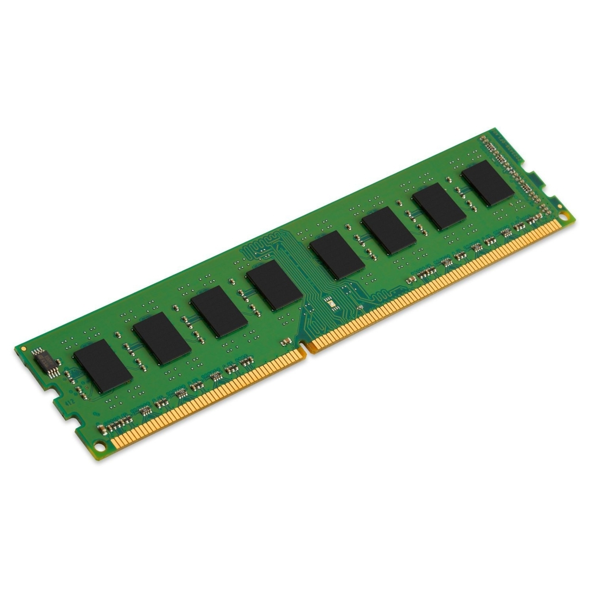

Random-access memory
Intro
Random-access memory (RAM /ram/)is a form of computer memory that can be read and changed in any order, typically used to store working data and machine code.[1][2] A random-access memory device allows data items to be read or written in almost the same amount of time irrespective of the physical location of data inside the memory. In contrast, with other direct-access data storage media such as hard disks, CD-RWs, DVD-RWs and the older magnetic tapes and drum memory, the time required to read and write data items varies significantly depending on their physical locations on the recording medium, due to mechanical limitations such as media rotation speeds and arm movement. RAM contains multiplexing and demultiplexing circuitry, to connect the data lines to the addressed storage for reading or writing the entry. Usually more than one bit of storage is accessed by the same address, and RAM devices often have multiple data lines and are said to be "8-bit" or "16-bit", etc. devices. In today's technology, random-access memory takes the form of integrated circuits (ICs). RAM is normally associated with volatile types of memory (such as DRAM modules), where stored information is lost if power is removed, although non-volatile RAM has also been developed.[3] Other types of non-volatile memories exist that allow random access for read operations, but either do not allow write operations or have other kinds of limitations on them. These include most types of ROM and a type of flash memory called NOR-Flash. The two main types of volatile random-access semiconductor memory are static random-access memory (SRAM) and dynamic random-access memory (DRAM). Commercial uses of semiconductor RAM date back to 1965, when IBM introduced the SP95 SRAM chip for their System/360 Model 95 computer, and Toshiba used DRAM memory cells for its Toscal BC-1411 electronic calculator, both based on bipolar transistors. Commercial MOS memory, based on MOSFETs (MOS transistors), followed in the late 1960s. The first commercial DRAM IC chip was the Intel 1103, introduced in October 1970. Synchronous dynamic random-access memory (SDRAM) later debuted with the Samsung KM48SL2000 chip in 1992.History
Early computers Early computers used relays, mechanical counters[4] or delay lines for main memory functions. Ultrasonic delay lines could only reproduce data in the order it was written. Drum memory could be expanded at relatively low cost but efficient retrieval of memory items required knowledge of the physical layout of the drum to optimize speed. Latches built out of vacuum tube triodes, and later, out of discrete transistors, were used for smaller and faster memories such as registers. Such registers were relatively large and too costly to use for large amounts of data; generally only a few dozen or few hundred bits of such memory could be provided. The first practical form of random-access memory was the Williams tube starting in 1947. It stored data as electrically charged spots on the face of a cathode ray tube. Since the electron beam of the CRT could read and write the spots on the tube in any order, memory was random access. The capacity of the Williams tube was a few hundred to around a thousand bits, but it was much smaller, faster, and more power-efficient than using individual vacuprogram on 21 June 1948.[5] In fact, rather than the Williams tube memory being designed for the Baby, the Baby was a testbed to demonstrate the reliability of the memory.[6][7]
Types
The two widely used forms of modern RAM are static RAM (SRAM) and dynamic RAM (DRAM). In SRAM, a bit of data is stored using the state of a six-transistor memory cell. This form of RAM is more expensive to produce, but is generally faster and requires less dynamic power than DRAM. In modern computers, SRAM is often used as cache memory for the CPU. DRAM stores a bit of data using a transistor and capacitor pair, which together comprise a DRAM cell. The capacitor holds a high or low charge (1 or 0, respectively), and the transistor acts as a switch that lets the control circuitry on the chip read the capacitor's state of charge or change it. As this form of memory is less expensive to produce than static RAM, it is the predominant form of computer memory used in modern computers.
Memory cell
The memory cell is the fundamental building block of computer memory. The memory cell is an electronic circuit that stores one bit of binary information and it must be set to store a logic 1 (high voltage level) and reset to store a logic 0 (low voltage level). Its value is maintained/stored until it is changed by the set/reset process. The value in the memory cell can be accessed by reading it. In SRAM, the memory cell is a type of flip-flop circuit, usually implemented using FETs. This means that SRAM requires very low power when not being accessed, but it is expensive and has low storage density.

| Date of intoduction | Chip Name | Manufacturer |
|---|---|---|
| 2011 | sdfvf88 | Toshiba |
| 2012 | wqef78 | Samsung |
| 2013 | werd64 | Sony |
Advantages of the RAM
- Silent: since there are no moving parts RAM operation is completely silent.
- Power-efficient: for the same reasons
- Fast: RAM is the fastest storage medium outside of the CPU.
- RAM uses much less power than disk drives.
- Reduce your CO2 emissions and extend your battery life.